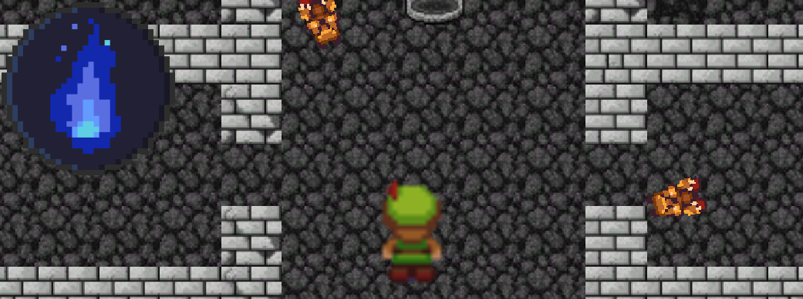

Week 1 - Getting started
During the first week of the game development, the group held a first meeting over discord to briefly get to know each other as well as hold an initial brainstorm to generate ideas for the game. The brainstorm went on for roughly 15 minutes during which each member of the group wrote down their ideas, after which everyone went through and explained their ideas to the group. The group then got together and discussed which of these ideas stood out the most and seemed to be the most interesting to pursue. After we had come to agree on some of these ideas, we started discussing which of them could be combined and work together in interesting ways. At the end of the first brainstorm, the group had the idea that we were going to do a roguelike game with elements of an RTS game (combining a game like “binding of isaac” for example, with the ability for the player to control their own units.
I put together a quick rudimentary prototype for a 2D roguelike character controller with a top down setting that the group got to have a look at. It was very basic and only included an animated character with movement but I felt it could have been useful in generating ideas.